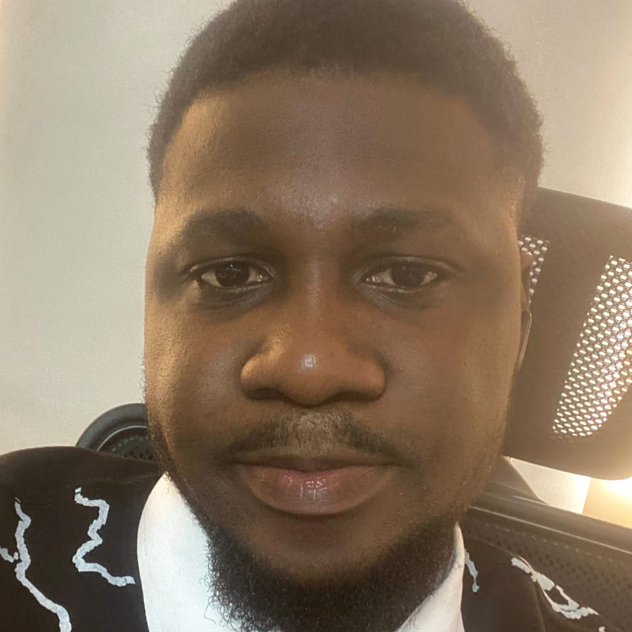

AI/ML Engineer · Lagos, Nigeria
Well, hi there.
I'm Mike, and welcome to my world of many colours. I enjoy writing code, experimenting with LLMs, and exploring whatever else helps turn messy problems into simple, useful solutions, and that single thought has quietly shaped almost everything I've built. My journey has run through data analytics, data science, and machine learning, on to AI, and there isn't a role on that spectrum I haven't been able to fill for a team; I just happen to be focused on AI right now. Whether it was analyzing millions of rows of banking data, training machine learning models, designing AI agents, or building products powered by large language models, I've always been chasing the same idea: Can this solve the problem better?

AI/ML Engineer | AI Automation & Data Science | BI/CVM Manager
I build production-ready LLM systems, intelligent agents and automations: voice AI, multi-agent applications, and RAG pipelines that actually ship.
Book a callA chapter of my story
It started with a question.
There has to be a better way to do this.
Sometimes the answer is a few lines of code, sometimes it's a new workflow, sometimes it's an entirely new product, and sometimes it's an idea that keeps me awake until two in the morning.
I didn't set out to become an AI engineer. I followed curiosity, but more than that, I followed problems, and it led me through data analytics, into data science, through machine learning, and eventually into a world where software can reason, plan, write, and collaborate. That journey is still unfolding, and the tools change almost weekly, but the real work has never changed: understand the problem, then build the simplest thing that solves it well. Curiosity helps, and so does refusing to be distracted by whatever is fashionable.
Along the way I've built systems for banks, finance teams, educators, researchers, and growing businesses. Different industries, different challenges, but always the same objective: build tools that quietly remove complexity from people's lives. Technology doesn't have to be flashy to be valuable. In fact, the best technology usually disappears into the background and just works.
One version of that instinct showed up early: watching students and professionals stare at a blank page, unsure where to even begin a research project, what topic to pick, how to shape it into a real specification, or where to find the right materials. That blank-page paralysis is what I built Research AI to solve: a tool that walks anyone through choosing a topic, deriving a clear specification for their project, and surfacing the materials they need to actually start. I built it and gave it away for free, because the hardest part of research shouldn't be the part where you haven't even started yet. I've always enjoyed building things that reduce friction; it just happens to look like AI now.
Not every project becomes software. Some become essays, some become books, some stay as notes scattered across notebooks and whiteboards. Writing has been part of my life long before AI entered it, and it slows my thinking just enough to make complicated ideas feel simple. Sometimes I write about technology, sometimes politics, sometimes leadership, sometimes nothing practical at all. Ideas deserve somewhere to live before they become products.
My favorite office doesn't have a desk. It has quiet streets after sunset. Some of my best ideas have arrived while walking aimlessly through my neighborhood, replaying problems in my head until they begin to solve themselves. Code is written on a keyboard; solutions rarely are.
I've collected certifications over the years. They're useful, but they've never been the destination. Learning is. Every new framework, every failed experiment, every unexpected bug, and every impossible deadline has taught me something no certificate could. The best education I've had has always been curiosity followed by persistence.
There's a running joke I tell friends: I've visited more than twenty-eight countries… without leaving home. Books have taken me there, research has taken me there, stories have taken me there. One day I'll collect passport stamps instead of pages; until then, ideas continue to travel remarkably well.
This website is a collection of those ideas. Some became products, some became experiments, some became lessons, and a few became failures worth repeating differently. And hopefully, somewhere in these pages, you'll find something that makes you stop and think,
“There has to be a better way to do this.”
Because that's usually where every interesting journey begins.
What I do now
AI/ML Engineer, Technocrat IT since Feb 2026
I build AI agents into our startup clients' apps: intelligent customer support, and business agents that query databases, read images and slides, and turn them into accurate dashboards. I also set up AI tooling that makes our developers faster.
AI/ML Engineer, Freelance/Consultancy since Aug 2025
I build production-ready AI systems and multi-agent applications for clients: CFO AI Assistant v2 with 95%+ RAG accuracy, an AI Banking Assistant serving 70+ users with secure 2FA, and real-time voice interaction under 2 seconds.
Talk to my twin
The Avatar page embeds a live, tool-using digital twin trained on my real experience. Ask it about my projects, skills, or how to get in touch, and it'll answer as me (and ping me directly if you'd rather speak to the genuine article).
Open the Avatar